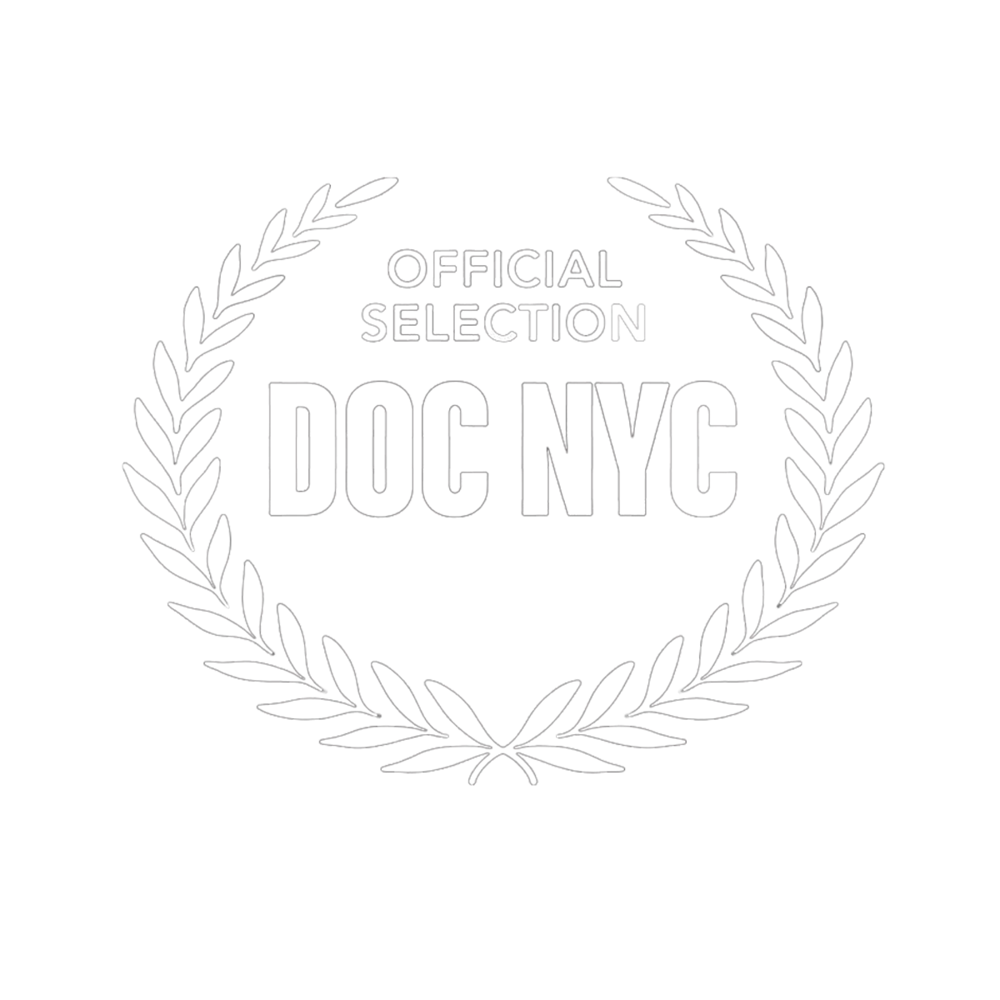
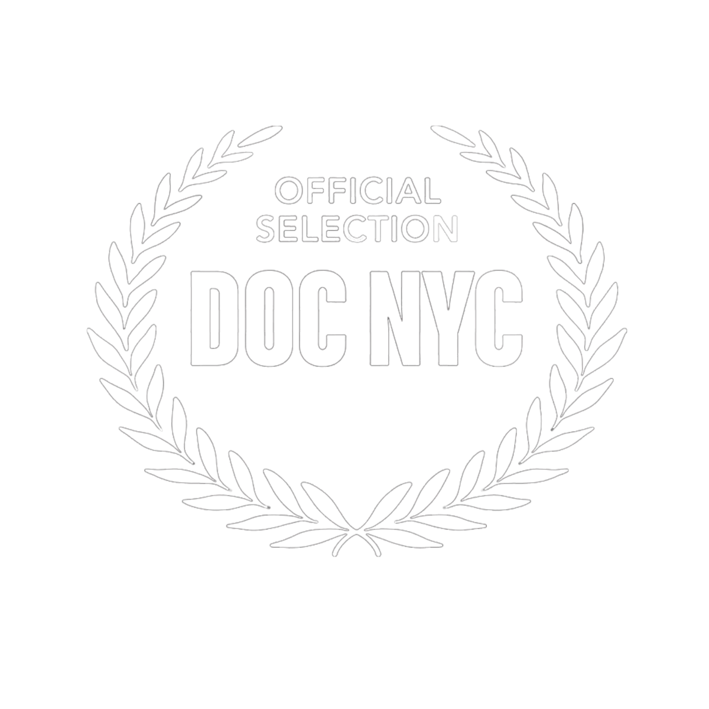

Hi, I’m Rhea Dudani, a Brooklyn-based filmmaker. I bring people together through storytelling, focusing on the rich, personal experiences of marginalized communities. I create
 

I’m Rhea Dudani, a filmmaker driven by my deep passion for feminism and politics. My heart lies in telling stories that uplift South Asian and female voices, striving to shatter barriers and inspire change.
My filmmaking journey began back in 2008, when I picked up my mother's camcorder for my directorial debut: a film starring my younger sister and an eclectic cast of household plants, completely narrated by yours truly. Unfortunately, this filmmaking endeavor taped over a slew of important family memories. It's okay, though... our family has gotten over it. It was a whimsical beginning that ignited my passion for storytelling.
After years of pursuing visual storytelling through photo and video, I headed to the Tisch School of the Arts, where I earned my B.F.A. in Film and Television.
Once I graduated, I jumped into the world of production, working as an Associate Producer at Big Mouth Productions, and Hazel Pictures, where I worked on five separate feature documenatries. Then, I continued as an Associate Producer at AKPD Message & Media. There, I crafted political ads for the 2022 Midterm Election, and the 2024 general election, blending my love for storytelling with a splash of activism.
Now, I’m embracing the freelance life as a producer, director, and writer. I’m on a mission to amplify South Asian and female voices, using film as a playful yet powerful way to spark conversations and challenge perceptions. Join me on this exciting journey—I can’t wait to see what stories we’ll tell next!